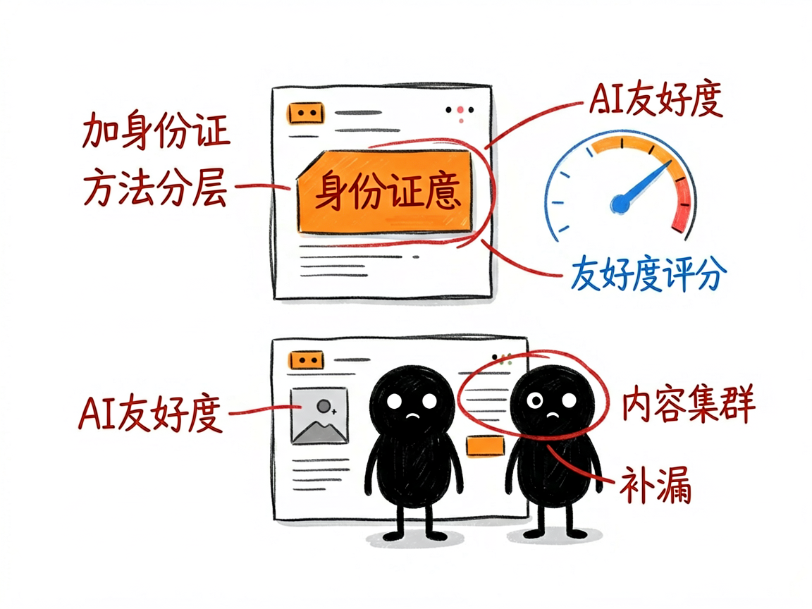

想让 AI 搜索（ChatGPT、豆包等）推荐你的品牌？它帮你按"AI 口味"改内容 —— geo-optimizer 介绍
现在大家问问题，越来越习惯直接问 ChatGPT、Perplexity、豆包、Gemini 这些 AI 助手，而不只是百度谷歌了。一个问题问下去，AI 会综合网上的内容给答案——可如果你的品牌、你的产品，在 AI 的答案里根本没被提到，或者提到了却说错，那等于在一种新的"搜索入口"上彻底缺席。
geo-optimizer 就是来解决这件事的。
GEO 是"生成式引擎优化"（Generative Engine Optimization）的缩写，简单说就是：让 AI 搜索引擎更愿意、更准确地引用你的内容。你给它你的品牌信息和网页，它还你一套让 AI 更容易"看懂并推荐你"的优化方案。

它到底能做什么
- 生成结构化数据标记：给网页加一段机器能读的"身份证"，告诉 AI 你是谁、提供什么——比如公司信息、常见问题解答（FAQ）、文章信息。
- 检测内容"AI 友好度"：分析你的文字里营销套话多不多、句子长不长、有没有数据支撑、有没有直接问句，给个可读评分和改善建议。
- 规划内容集群：帮你搭"一个核心主题页 + 多个子主题"的网站结构，让 AI 觉得你在这个领域讲得全、讲得透。
- 测 AI 可见度：看你的品牌名会不会出现在 AI 对相关问题的回答里，并生成季度对比报告。
- 做内容差距分析：你给它一个网址，它会去对比"AI 概览里提到的"和"你页面上说的"差在哪，给出补漏建议。

怎么用
你不需要记任何命令。在 codex / workbuddy 等 agent 装好 geo-optimizer 技能后，直接对 AI 说话就行： 场景 1：给品牌页面加上"AI 身份证" 你：帮我给"XX 品牌"生成一份公司信息的结构化数据标记，我们是做 XX 领域的，主要产品是 XX。 AI：它会产出一段能直接贴进网站的结构化数据，清楚告诉 AI 你的公司是谁、提供什么、擅长哪些领域。 场景 2：看看我的文案 AI 友不友好 你：这段官网文案对 AI 友好吗？帮我打个分，顺便说说哪里要改。 AI：它逐条分析你的文字，指出套话、长句、缺数据等问题，并给一版更好被 AI 引用的改写建议。 场景 3：查我品牌在 AI 里露不露脸 你：最近豆包、Perplexity 这些 AI 回答相关问题时会不会提到我们品牌？帮我测一下可见度。 AI：它去问相关 AI 并核对你的品牌是否出现，生成一份季度对比报告，告诉你哪些问题里你"缺席"了。
谁适合用
- 做品牌内容、官网运营，想在新一代 AI 搜索里占位置的人。
- 帮客户做 SEO / 内容优化的从业者。
- 做 AI 工具、需要把"让 AI 引用"做成标准化流程的人。
一点说明
它是一套面向"做内容优化 / 搭 AI 工具"的技能，不是普通人点一下就完事的 APP。它提高的是"被 AI 引用的概率"，不保证某个平台一定会提你（文档里明确写了这点）。部分功能（比如可见度测试）需要你自家的相关接口密钥（API Key）才能跑，没有的话它会给你手动测试的方法。具体能力以项目文档为准。